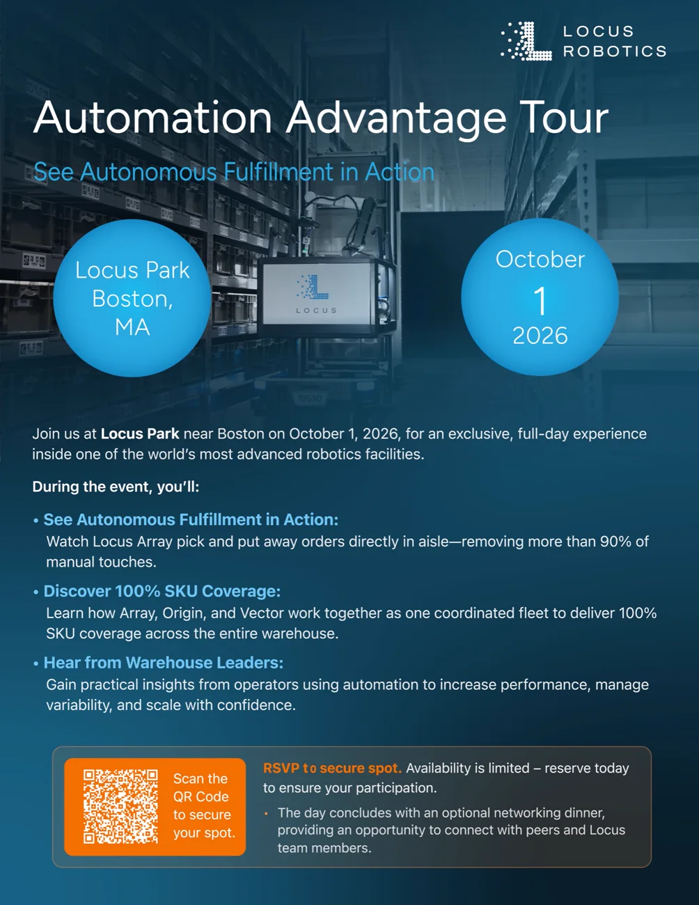
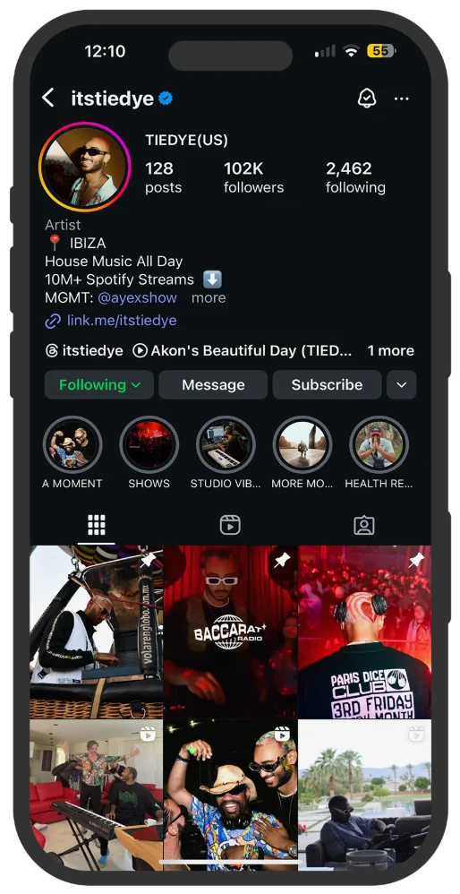
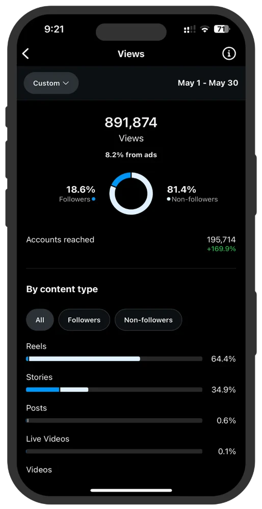

Social media strategy, content and product design
Hayden Levinson
I've worked in social media for six years. I plan it, make the content and keep track of the numbers.
Locus Robotics
Locus had never had a social media manager, so I set up their social media and the strategy for it.
- The problem
- Nobody was running social and there wasn't a real strategy. The posts didn't have a consistent look, and engagement was around 3% across LinkedIn, Instagram, Facebook, X and YouTube.
- What I did
- I gave everything one consistent look, made content to fit each platform, and used the data to decide what to post.
- The result
- Engagement went from about 3% to 7% in a year. I reported the numbers to executive leadership.
How I went about it
-
Where I started
I went back through everything that had already been posted and looked at how each post did by format, topic, day, copy length and how often we posted. That showed me what was working.
-
Look and feel
I created one standard look for the posts, so everything looked like it came from the same brand.
-
Each platform
I adjusted the content for each platform instead of posting the same thing on all five.
-
Making the content
I filmed the video, took the photos and designed the graphics myself.
-
Reporting
I put together reports for executive leadership that showed how each post did. When I wasn't sure about something, I A/B tested it.
-
Staying on brand
I built AI agents that check posts against the brand guidelines before they go out. I also used Claude to help go through all the post data.
Some of the posts I made for Locus.
Engagement rate, up from about 3%. It rose to about 7%.



I planned, designed and made all of these. AI agents I built checked each one against the brand guidelines before it went out.
Creators and artists
I build and grow social pages for creators and artists. I help with strategy, and I film and photograph content for them.
- The problem
- Regular posts mostly get shown to people who already follow the account, so they don't bring in many new followers.
- What I did
- I focused on Reels, because Instagram shows them to people who don't follow yet, and used Stories to keep current followers engaged.
- The result
- In one month, one account got 891,874 views, and 81% were from people who didn't follow it.
5M+ followers across the accounts I manage.




What one month of numbers showed
This is the insights screen for one account from May 1 to May 30, and what I look at on it.
-
0.6%
of views came from regular posts. They mostly reach people who already follow, so they don't help much with growth.
-
64.4%
came from Reels. Reels get shown to people who don't follow the account, so that's where I put most of the effort.
-
34.9%
came from Stories. Stories mostly reach existing followers, so I use them to keep people engaged.
-
8.2%
came from ads. Most of the views were organic.
-
81.4%
came from people who weren't following. The account reached 195,714 accounts, up 169.9%.
Bandage Buddies
A first-aid brand for kids who are into action sports. I worked on the branding and built the store on Shopify.
- The problem
- Most kids' bandages have cartoon characters or cute patterns. There wasn't anything for kids who skate, bike and get scraped up.
- What I did
- I built the brand around action sports and gave the characters a purpose: helping kids feel tough and get back up after a fall.
- What I built
- The brand positioning, the tagline and the Shopify store.
For kids who earn their scrapes.